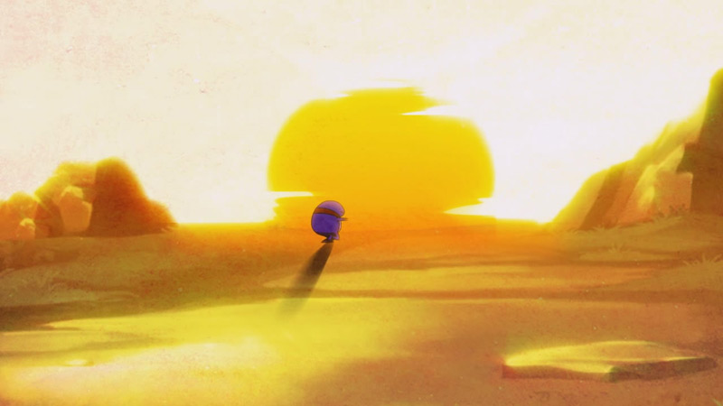
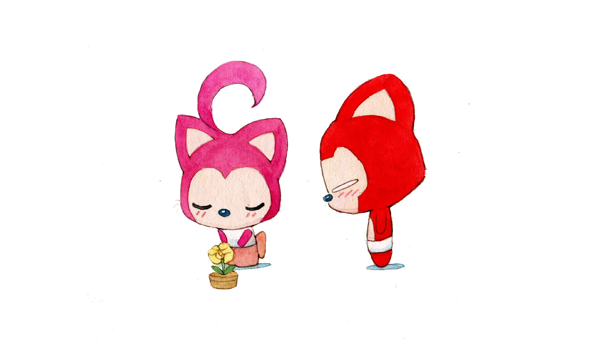

小聂 ❤ 小婷
按键盘 "↓" 开始倾听小聂的浪漫表白
右下角有音乐按钮可以打开哦
过去的小聂内心空荡荡的，生活好像毫无波澜，默默孤单

一个人去医院

一个人看夕阳
一个人坐地铁

小聂的内心慢慢封闭

但是他从来没有放弃，坚持等待着

生活难免有风风雨雨

小聂总是尽自己的最大努力去应对

完成时忍不住抿着嘴唇微微一笑

可是小聂的爱情在哪里呢？

小聂不知道
那时候他以为
生活只流转在寝室、食堂和教学楼


小聂很沮丧，又像是认清了现实
于是小聂继续一个人向前走

直到有一天
小聂和小婷相遇了

小聂慢慢开始注意小婷
像是一束光照进了小聂的心里

小婷的笑容很甜，很率真
暖暖的简直可以融化了小聂的心

小婷和朋友间的友谊也让小聂很羡慕

小婷还会同时操作两个人物玩游戏
这个总让小聂很困惑，总忍不住去瞟几眼


可小聂有时候很胆怯

不敢大大方方地和小婷交朋友
直到有一天，小婷突然转过头来和小聂说话了

然后小婷还加了小聂的QQ

小聂好开心，好像和小婷跨越了很大一段距离

小聂知道小婷很累，小聂好想帮帮小婷
可是没有帮上很多
后来小婷还送了一杯奶茶给小聂
小聂整晚都是甜甜的，开心o(*￣▽￣*)o

然后，小聂和小婷一起约自习
原来有你在身边学习的感觉那么奇妙

小聂想和小婷呆在一起，一起去做很多事情

小聂想和小婷一起去海边看夕阳
牵着手静静看着海水泛着粼粼波光

天黑后，可以一起躺在沙滩上数星星

小婷做过的事和没有做过的事小聂都想和你一起体验

小聂想和小婷在一起

小聂想和小婷走过很多山水和风雨
一起面对困难

想和你一起见证风雨过后的彩虹和欣喜
还有那些日常与惊喜

然后在一起迎接美好生活
小聂会感觉自己好幸福。
因为自己有了小婷的陪伴

他们可能偶尔也会吵架

小聂不想这样
小聂不想让小婷不开心


是我哪里做的不对，怎么才可以让小婷开心起来呢
小婷如果不开心，窗外的风景都失去了颜色

可小聂有时候好笨拙
很多时候都傻乎乎的
但为了小婷，他想做到自己的最好


小聂想和小婷享受生活中的每一个瞬间
小聂想一直陪伴着你


就算争吵过后也想要抱着你
小聂有时候话很少
因为那样可以静静听你讲
小聂也在尝试着改变
让自己不再沉默

小聂的心对着小婷逐渐开放
也只有对小婷他才可以说出那么多话


这是我们的 第一个七夕节 小聂可以想象到 小婷看到开心的样子

余生很长 我们还要一起走好多路 去看很多风景 见到很多很多人 闯过很多困难
小聂会继续努力的
小婷一起加油呀


遇到小婷是小聂的幸运
小聂好想珍惜我们在一起的每分每秒
小聂想和小婷一起过幸福的生活


如果小婷害怕黑暗
那么让小聂成为小婷的星空吧
每一次睁眼
都可以看见小聂眼里的繁星点点
即使全身湿透，我也想和你
牵手穿过很多很多场暴风雨


小婷愿意和小聂一直走下去吗
小聂先回答
我愿意
I love you
很想抱一抱你,小婷要照顾好自己呀
我不在你身边的时候，你要多爱护和照顾自己哦
爱你哦
-- 按“Esc"键有惊喜哦ヾ(≧▽≦*)o